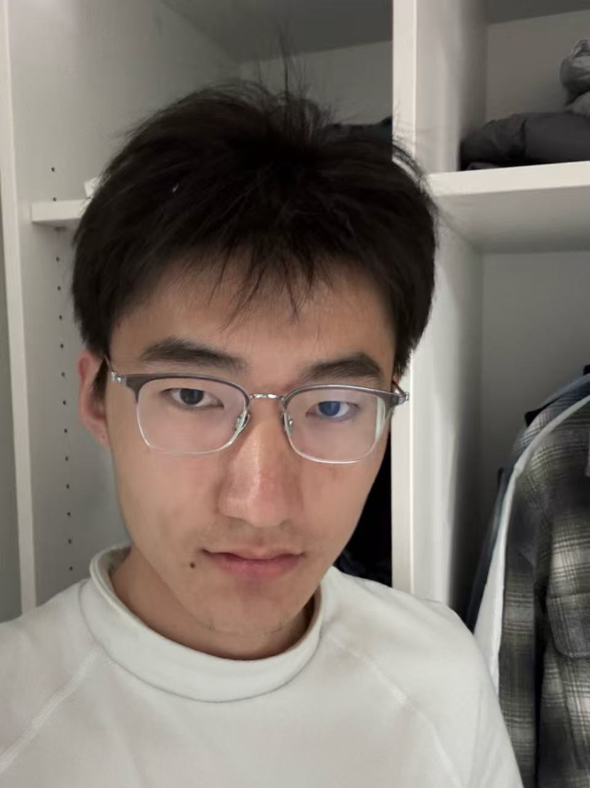

Research Assistant — Helmholtz Munich
Work on a Applied Machine Learning reseach project including Multi-task Learning, Meta-learning, Few-shot Learning and so on under the supervision of Dr. Igor Tetko.

I am an undergraduate student majoring in Computer Science at the Technical University of Munich (TUM). I am now doing a Internship @Phinia and RA @Helmholtz Munich.
I am interested in exploring how Machine Learning can help us better understand the world and solve real-world scientific problems. I enjoy learning new things, exploring different ideas, and turning curiosity into something meaningful.
Work on a Applied Machine Learning reseach project including Multi-task Learning, Meta-learning, Few-shot Learning and so on under the supervision of Dr. Igor Tetko.
Email: jingran.gong@tum.de